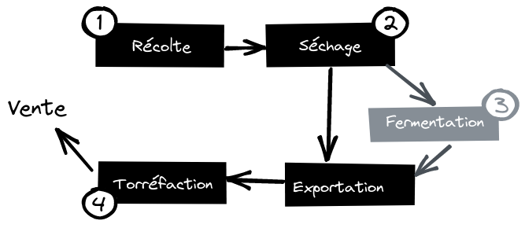
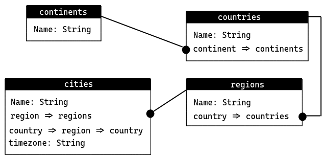
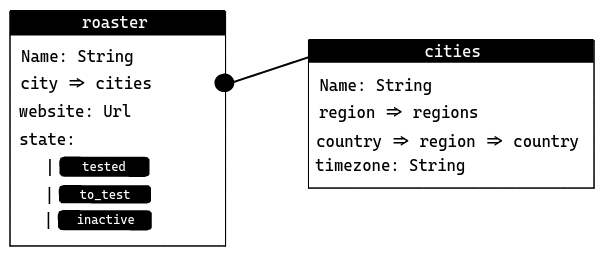
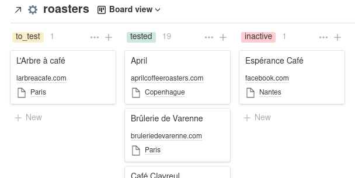
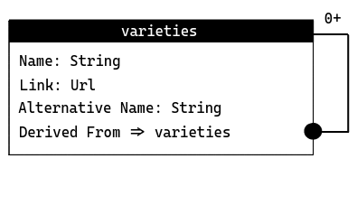
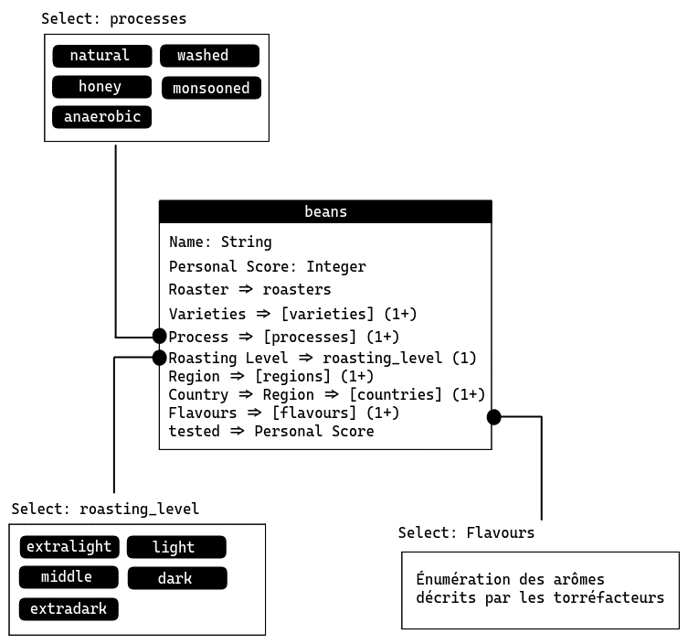
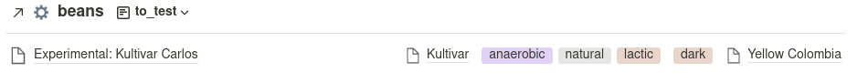
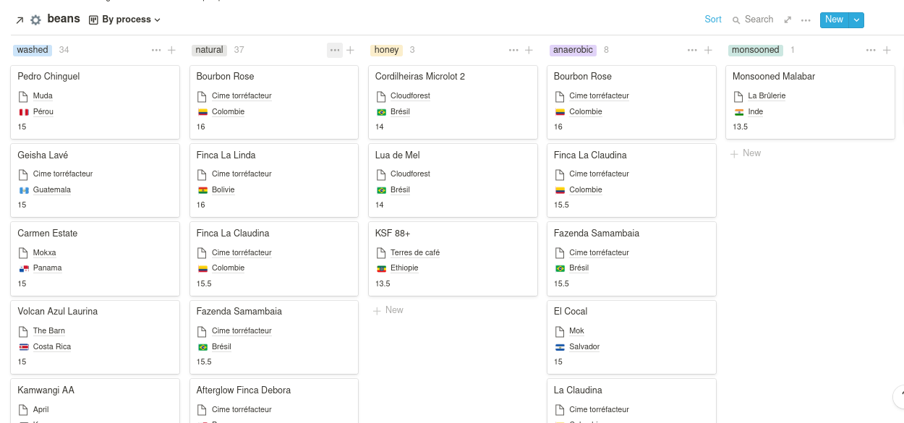
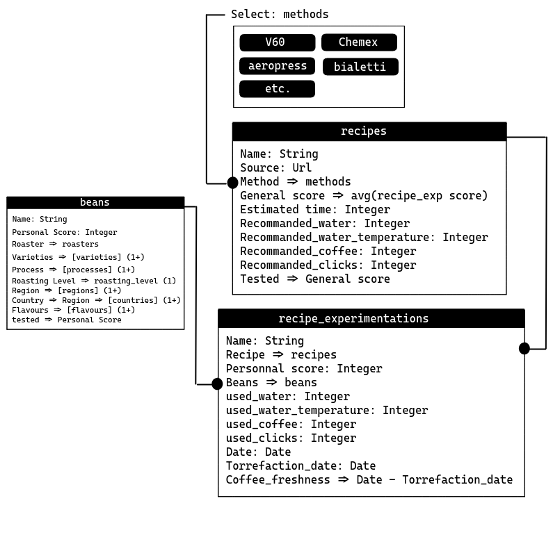

Mon utilisation de Notion pour le café
Présentation de mon utilisation de Notion.so pour ma consommation de café.J’avais déjà entendu parlé de Notion.so il y a quelques temps, mais je ne m’étais jamais réllement penché sur l’outil. Ce n’est que très récemment, dans un débat sur l’innénarrable Slack de LambdaLille qui portait sur la pertinence et l’utilité du NoCode que je m’y suis réintéressé.
Même si mon utilisation de l’outil est encore assez naïve, je suis très loin de Shubham Sharma ou de Jonathan Lefèvre qui l’utilisent comme un véritable exocortex, j’ai décidé de vous présenter un usage très spécifique que je fais de Notion: “l’amélioration de ma compréhension du café”. Soit comprendre les variétés, les types de torréfaction que j’aime et améliorer ma capacité à anticiper le niveau d’appréciation que je peux avoir pour des cafés par leur description.
Il est important de souligner que d’autres outils (voir même des outils fait mains) auraient pu me permettre d’atteindre les mêmes résultats mais Notion semble parfaitement convenir pour ce cas d’usage spécifique, dispose d’un programme gratuit (ce qui est parfait pour se faire une idée) et m’a permis de gagner beaucoup de temps.
Vous noterez avec quel manque de honte je me remet à écrire sur mon blog, plus d’un an après le dernier article… et, en plus, avec un article non technique.
Actuellement, mon site web est “un peu plus qu’un site web”. En effet, ce que vous voyez n’est que la génération de pages HTML basée sur une base de données hiérarchisée qui supporte plusieurs agrégats (des articles, des projets, des galeries, mais aussi des timetrackers, des liste de tâches et beaucoup d’autres). L’avantage de cette séparation entre la représentation du contenu (ici, les pages HTML) et sa description, c’est que je peux calculer des métriques et construire des pages plus complexes. Par exemple, les pages qui affichent des projets forment une relation entre un timetracker et un projet, l’identifiant du projet faisant office de filtre pour le timetracker.
Donc, le logiciel qui permet, entre autre, le déploiemment de mon site web n’est pas juste un générateur de site statique mais c’est aussi un outil qui me permet, notamment, de construire et de requêter des collections. En raisonnant de cette manière, je pourrais parfaitement étendre ce logiciel pour le rendre capable de prendre en charge mes collections de livres et le suivi de ma consommation de café. Le problème, c’est le temps à investir pour chaque nouvel agrégat.
Workflow actuel d’ajout d’agrégat
Actuellement, pour ajouter une nouvelle collection, je dois définir, manuellement, plusieurs types et fonctions. En général je fournis ces composants :
type tun type qui décrit la structure de mon objet de collectionequaletcomparedes fonctions qui agissent sur deux valeurs de typetpour respectivement vérifier leurs équivalence et faciliter l’ordonnancementto_qubeetfrom_qube, qube est le nom que j’ai donné au langage de description que j’utilise. Il ressemble très fort à des S-expressions, mais portant un peu plus d’informations sémantiques (par exemple le support des chaines de caractères)- créer une CLI (si nécéssaire).
Comme mon format de sérialisation à été défini génériquement, je peux facilement transformer un type arbitraire dans ce format et je peux délèguer à cette bibliothèque la projection d’une chaine de caractères dans ce format. Par contre, je dois ensuite valider chaque champ (en utilisant des validateurs applicatifs).
Même si ça ne prend pas tant de temps que ça, pour peu que l’on y soit habitué il y a tout de même des pistes d’amélioration.
Améliorations possibles
Comme pour beaucoup de systèmes développés pendant longtemps il existe des pistes d’améliorations triviales. En voici quelques-unes que je n’ai pas encore mise en place (premièrement parce que je suis en train de réecrire tout mon système de publication… parce que c’est très rigolo de sans cesse réinventer la roue et ensuite parce que le temps passé à l’amélioration du système bloque potentiellement l’utilisation de ce système. Il est donc probable qu’à terme, je n’utilise plus du tout Notion et que je mette, enfin, en place ces améliorations).
Dérivation des fonctions d’égalité, de comparaison et de projection
En OCaml, il est possible de dériver des implémentations mécanisables au moyen du préprocesseur interne (PPX). En général, c’est un des cas d’usage pour lequel utiliser un préprocesseur est recommandé. Il existe déjà
ppx_comparequi permet de dériver des fonctions d’égalité et de comparaison. Décrire un dérivateur de projection dans le format qube est aussi relativement trivial à implémenter.Utiliser la fonction de validation pour générer la CLI
Pour construire des CLIs, j’utilise l’excellente bibliothèque Cmdliner qui permet de déclarativement décrire une CLI. Comme la validation de ma donnée utilise le foncteur applicatif Validation et que la description de la CLI, avec Cmdliner utilise une représentation applicative, je pourrais décrire mes validations dans un Free Applicative et fournir deux transformations naturelles vers la validation concrète et vers la description de la CLI, exactement comme décrit dans ce guide.
Générer une UI via la fonction de validation
Le procédé est exactement le même que celui décrit dans la génération de la CLI si ce n’est qu’au lieu de transformer vers un autre foncteur applicatif, on transforme vers un monoïde, ce qui est assez pratique car cela rend les UI définies par des transformations composables.
Un point intéressant (qui pourrait me motiver, plus tard, à mettre en place ces propositions d’améliorations) est que les abstractions requises sont présentes dans Preface.
Sur le café
Maintenant que nous avons vu le fonctionnement général (et les améliorations possibles) de mon système de collecte d’informations, nous allons nous intéresser au café et surtout, en quoi Notion pallie facilement une grande partie du travail que j’ai décrit dans la section précédente.
Il y a approximativement deux ans, j’ai décidé de radicalement changer mes habitudes de consommation concernant le café. Alors que historiquement, je buvais du café mécaniquement, sans réellement me soucier du café ou de la préparation (je buvais même du café instantané, c’est dire), j’ai décidé, grâce au Livre du thé (amusant non ? Un livre sur le thé m’a donné envie de boire du bon café), de m’intéresser sérieusement au café.
Un peu à la manière du vin, identifier les critères qui font que l’on aime plus ou moins certains cafés (et certaines préparations) peut être assez complexe au début. Pour ma part, j’ai eu la très naïve impression d’être devenu un expert en vin quand j’ai été capable de dire : “j’aime bien le vin tanique”. C’est très léger, je vous l’accorde. Comme pour le vin, il faut goûter, goûter beaucoup et consigner (dans son esprit ou dans une base de données) les critères/les caractéristiques qui varient pour être, à terme, capable d’anticiper l’appréciation générale d’un café.
Note en apparté, dès lors que l’on décide de s’intéresser sérieusement au café (de mon point de vue), il est impératif d’avoir des outils pouvant rendre chaque préparation réplicable, ça implique généralement d’avoir du bon matériel : un moulin réglable (pour moudre à la demande), une balance et de quoi contrôler la température de son eau, en complément, diminuer le potentiel hydrogène de l’eau (j’utilise une carafe Brita).
De l’arbre à la tasse
Pour comprendre quels sont les critères que j’ai décidé de consigner, voici une description assez sommaire du mouvement du café jusqu’à sa préparation. Il est probable que ma sélection de critères soit trop faible et qu’elle change dans le temps, cependant, actuellement elle me convient.
Dans les grandes lignes, les étapes se découpent en 6 grandes parties, dont une qui n’a pas toujours lieu (ou du moins, explicitement: la fermentation) et deux qui ne sont pas, à mon sens, porteuse de critères, ou alors peuvent être résumées par “le torréfacteur” comme un critère de sélection.

La récolte
Cette étape essentielle met en lumière plusieurs caractéristiques: la région (et par extension le pays), la variété (et par extension l’espèce), le producteur, l’altitude, des informations relatives aux dates de récoltes.
Le sèchage
Cette étape est souvent réalisée par le producteur et la méthode de sèchage a une grande incidence sur le goût final du café. Le critère extrait est donc logiquement cette dernière que l’on peut résumer au processus.
La fermentation
Tous les cafés ne sont pas fermentés, mais il arrive que certains le sois, après le sèchage, ce qui peu amener des arômes totalement différent. La fermentation peut être de différent types et de différentes durées. On peut donc extraire un type de fermentation ainsi qu’une durée de fermentation.
La torréfaction
Un autre rôle essentiel dans le traitement du café est d’adapter la torréfaction, grossièrement la cuisson, des grains verts pour en révéler les arômes. Il va aussi en établir un profil aromatique. De nos jours, certains torréfacteurs choisissent aussi les producteurs et les grains verts avec lesquels ils veulent travailler. Ce qui nous permet d’extraire les critères suivants: le torréfacteur (on peut aimer la méthode générale d’un torréfacteur), le niveau de torréfaction (la couleur du grain torréfié), et le profil aromatique du café.
Organisation et modélisation dans Notion
Maintenant que nous avons quelques éléments nous permettant de construire un modèle, rendons-nous dans Notion. Résumer Notion est un exercice compliqué. En effet, l’outil peut servir énormément de cas d’usages.
Comment décrire sommairement Notion
Je pense que l’on pourrait résumer Notion à un genre de Wiki personnel (pouvant aussi être collaboratif). Concrètement, on peut créer des pages, ainsi que des pages dans des pages et ces pages peuvent accueillir des blocs, pouvant être du texte, des titres, des éléments multimédias. Une page peut aussi avoir un template attaché ou peut être une base de données. Ces bases de données (qui sont en fait des tables) peuvent entretenir des relations avec d’autres tables et avoir plusieurs vues (qui filtrent différemment les données, qui peut aussi les ordonner différemment). On peut ajouter dans une page régulière un bloc qui est une base de données auquel on a attribué une vue spécifique. La possibilité de spécifier des vues (qui embarquent uniquement certains champs de la table, et qui appliquent des filtres et des stratégies d’ordonnancement spécifiques) permet de décrire des prismes de sources de données et de construire de véritables dashboards.
Pour garder mon espace de travail correctement ordonné, j’ai regroupé toutes mes pages qui correspondent au café dans une page… sobrement appelée coffee (avec un petit emoji :coffee:, parce que je suis moderne). Et dans cette rubrique j’ai une page appelée backend dans lequel je placerai toutes mes tables qui seront injectées dans des pages situées au même niveau que backend.
Description des points géographiques
Pouvoir définir des espaces géographiques est important pour décrire la région, le terroir, d’où provient le café mais aussi pour caractériser la ville où se trouve le torréfacteur. Je n’ai pas été très original, dans mon répertoire backend j’ai créé plusieurs tables respectant ce modèle:

La découpe est assez naïve. Regions est une appellation volontairement générique parce que tous les torréfacteurs n’ont pas le même niveau de précisions quand ils décrivent la région de récolte du café. Le champ country dans cities est un rollUp, soit un champ virtual calculé en fonction d’une relation (ici, sur la relation region).
Il serait possible de très facilement améliorer le modèle général en ajoutant deux champs pour décrire les latitudes et longitudes pour le coin haut_gauche et bas_droit d’une table ce qui permettrait de générer une carte, mais ce n’est pas vraiment l’objectif de l’article.
Description des torréfacteurs
Maintenant que nous avons décrit une ville, on peut facilement décrire un torréfacteur :

La représentation d’un torréfacteur est assez simple et n’est “que” relié aux villes. Le champ state est une énumération (unique), ce qui veut dire que l’on ne peut sélectionner qu’une seule des valeurs possibles. Le gros avantage de ces champs c’est qu’ils permettent de faire office de clé de regroupement dans une vue Kanban, c’est d’ailleurs de cette manière dont je m’en sers dans la vue spécifique (en dehors de backend) aux torréfacteurs :

Cette vue a l’avantage de me pousser à essayer des torréfacteurs dont j’ai entendu parlé mais que je n’ai pas encore eu l’occasion d’expérimenter. Elle incite, implicitement, à diversifier mes expériences.
Descriptions des variétés
Même si c’est plus subtil que ça, on peut attacher chaque variété de café à deux caféïers différents : Coffea arabica et Coffea canephora, donnant respectivement de l’Arabica et du Robusta. Cependant, comme jusqu’à présent, je n’ai consommé que des café de variétés issues d’Arabica, je n’ai pas (encore) fait reflété l’arbre dans la description de la variété :

Le champ Link me permet, quand il existe, de référencer la variété vers l’excellent Catalogue des variété de World Coffee Research et le Alternative Name me permet de donner une liste de noms alternatifs (Notion ne gérant pas les listes de chaines, j’utilise une seule chaine de caractères et je sépare les différents noms par des virgules, rendant le tout facile à parser) par exemple, la variété Villa Sarchi est aussi appelée Villalobos.
Comme certaines variétés sont issues de la mutation génétique d’une variété (artificielle ou naturelle), le Bourbon Rose est, par exemple, une mutation naturelle du Bourbon, ou de la composition de plusieurs variétés, comme par exemple le Mundo Novo qui est issu d’une mutation entre le Typica (probablement l’espèce originale du café) et du Bourbon, le champ Derived from me permet de tracker les variétés duquel est issu la variété courante. C’est possible grâce à une relation sur la table varieties (elle même).
Ce qui me permet, enfin, de décrire les différents grains de café que j’ai pu acheter.
Description des grains
Il s’agit de la table la plus touffue du système, en effet, elle forme la conjonction de toutes les autres. Pour des raisons de lisibilité, j’ai pris la liberté de définir les multi-select (des énumérations pour lesquelles on peut sélectionner plusieurs valeurs) dans des boites différentes :

Certains champs comme name, roaster, region et varieties ne demandent pas d’attention particulières. Comme précédemment, le champ country est un rollUp depuis region. Ces champs (excepté le nom) peuvent être multiples car un café peut être un blend (soit un mélange non génétique de plusieurs variétés, de provenance différentes et potentiellement la collaboration de torréfacteurs différent).
Par contre le niveau de torréfaction est, à ma connaissance, toujours homogène (pour harmoniser les arômes), d’où le fait que le champs soit un sélecteur unique.
Certains champs, eux, méritent quelques compléments d’information.
Personnal score:Un score personnel que j’ai attribué au café après l’avoir essayé de plusieurs maières. La note est purement objective (et pour être plus exact, je devrais probablement tenir un journal de dégustation où je noterais chaque café par préparation, avec des métriques plus précises). En ce moment, le score personnel est à prendre comme une appréciation globale.
Flavours:Les arômes du café sont souvent décrit sur le paquet, de manière un peu subjective, par le torréfacteur. Cependant, comme ces derniers utilisent généralement la même grille d’arômes, je les consignes en utilisant un sélecteur multiple et à chaque nouvel arôme, je l’ajoute à l’enumération.
tested:Ce champ est une formule qui vaut
truesi un score à été attribué etfalsesi ce n’est pas encore le cas. Ce champ est utile pour faire rapidement remonter les café à essayer, un peu à la manière de la tableroasters.Manques
On déplorera l’absence de plusieurs champs, par exemple l’altitude à la récolte. C’est essentiellement parce que généralement la variété et la région de provenance du café donnent une indication relativement précise de l’altitude (et que dans le cas des blend, c’est une information qui est complexe à décrire).
L’absence de la durée de fermentation est aussi à déplorer, mais c’est une donnée qui est rarement donnée (et seulement une minorité des café que j’ai pu testé sont fermenté (anaérobics)).
Tableaux de bords
Comme pour la table roasters, il est possible de décrire des vues spécialisées qui servent des intérêts variés. Pour ma part, j’ai deux vues spécifiques :
Les cafés à essayer
Exactement pour les torréfacteurs, j’ai une vue (sous forme de liste) pour les café que je dois essayer, soit que j’ai acquis mais pour lesquels je n’ai pas encore attribué de score.

Une vue Kanban des cafés par processus de séchage
De mon expérience (personnelle), les deux facteurs qui influencent le plus les arômes sont le niveau de torréfaction et le processus de séchage. Comme une grande partie des cafés que j’essaie sont de torréfaction robe-de-moine (
middle) j’ai ajouté une vue Kanban par processus (où les cafés sont ordonnés, dans chaque colonne par score personnel).
Ce tableau indique clairement que je dois goûter plus de café semi-lavés (
honey) pour améliorer ma compréhension de l’influence des processus sur le goût du café.
Tirer parti des récursions mutuelles
Quand une table A défini une relation sur une table B, un champ implicite Related to A est créé dans la table B. Il est donc possible de calculer des agrégation. Par exemple dans la table roasters, je voudrais ajouter un champ score qui correspondrait à la moyenne des scores des beans de “ce torréfacteur”. Rien de plus simple, il suffit d’ajouter un rollUp sur la relation Related to beans (Roasters) et de choisir le champ Personnal Score et comme fonction de calcul average.
Aller plus loin : sauvegarder des recettes
Un aspect génial (et aussi ennuyeux) de Notion, c’est qu’une entrée dans une table peut être attachée à un document, en d’autres mots, il est possible d’embarquer, dans une entrée de table, une page complète. (L’aspect ennuyeux de cette fonctionnalité est que ça limite énormément les capacités de requêtage, ce qui rend les tables Notion moins libre dans l’écriture de requêtes que des tables SQL).
La liberté de rédaction dans le “corps d’une entrée” est très pratique pour décrire les préparations. En effet, il n’est pas nécéssaire de trouver une représentation normalisée (et générique), on peut se contenter de ne structurer, au moyen de champs, que les éléments récurrents d’une recette, par exemple, le type de machine à café, les différentes pesées et une estimation du temps, ensuite on peut utiliser le corps de l’entrée de la recette pour décrire toutes les étapes, en ajoutant, pourquoi pas, des tables inlines, directement dans le corps de l’entrée.

Concrètement, cette modélisation permet de décrire statiquement une recette avec les mesures définie par la recette originale. Comme je possède le moulin Comandante C40 et qu’il est assez courant de l’utiliser comme référence pour décrire la granulométrie de la mouture, je considère le nombre de cliques nécéssaires comme référence (plutôt que d’utiliser des adjectifs flous). Et j’ai une relation concrète qui expérimente une recette, pour un grain enregistré, avec la possibilité de changer les paramètres utilisés (par exemple si je décide de faire plus de café que les mesures préconnisées par la recette originale).
En complément, je propose de stocker la date de torréfaction et la date de préparation pour avoir une idée assez précises de l’impacte de la fraicheur de la torréfaction sur la recette (qui a beaucoup d’importance quand on utilise des recettes qui se rapproche de l’Espresso comme avec une cafetière italienne ou une Aeropress).
Comme expliqué dans la section sur les récursions mutuelles, on peut utiliser la même technique pour faire remonter le score général au niveau de la définition de la recette. Et exactement de la même manière que pour les recettes, on peut se servir de la page embarquée dans une entrée pour documenter certaines variations, ajouter un commentaire.
Pour conclure
Vous avez pu voir de quelle manière j’utilise Notion pour capturer mes préférences et donc, mieux comprendre mes goûts, dans le monde du café. Le modèle est loin d’être parfait et complet (en effet, j’aimerais indexer les Coffee shops qui me plaisent). Par contre, je pense que l’article aura le mérite de donner un aperçu de ce qu’il est possible de faire avec Notion.
Pour toute personne ayant déjà construit des bases de données en SQL, l’ensemble des propos de cet article semblera surement naïf, mais pour ma part, j’ai été assez satisfait de reprendre la rédaction de mon blog avec un article non-technique.
Concernant Notion, j’ai l’intuition que les avis sur l’outil sont assez clivants, certains détestent, d’autres adorent. Pour ma part, je suis assez bluffé par l’ergonomie de l’outil. Si je devais résumer ses avantages, je dirais que:
- il permet de rapidement construire des tables
- l’expérience utilisateur est (de mon point de vue) agréable
- même si les tables sont moins puissantes que des tables SQL, avec les formules, les relations et les rollUps (et les récursions mutuelles) il est possible de décrire énormément de scénario
- le fait qu’il soit possible d’embarquer des pages dans des entrées permet de construire des documents auquel on attache des metadonnéees
- les vues sont un outil puissant pour construire des tableaux de bords personnalisés adaptés à des besoins spécifiques
- les données sont exportables (en CSV ou via une API)
- la migration de données (et l’évolution du modèle) est facile
- Notion offre des interfaces graphique for free.
Étant néophyte en Notion, je suis passé à côté de beaucoup de fonctionnalités intéressantes (comme, par exemple, les templates et l’API) mais je suis très satisfait des fonctionnalités que j’ai pu utiliser. Mêmes’il est moralement plus cool d’insister pour que chacun réecrive son outil (en diffusant le code librement) et que, en tant que programmeur, certaines choses me manquaient, Notion m’a permis de gagner énormément de temps et je pense progressivement m’en servir de plus en plus. Well done NoCode, well done.
Pour conclure, n’hésitez pas à boire du bon café, à laisser tomber les machines Nespresso, et à arrêter d’acheter du café trop fortement torréfié (à la Carte Noir ou Grand mère) en grande surface et laissez-vous tenter par les plaisirs du café de spécialité, cultivé, récolté, séché, et torréfié avec savoir, c’est largement meilleur. Promis.